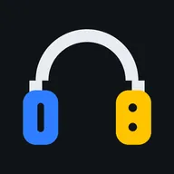
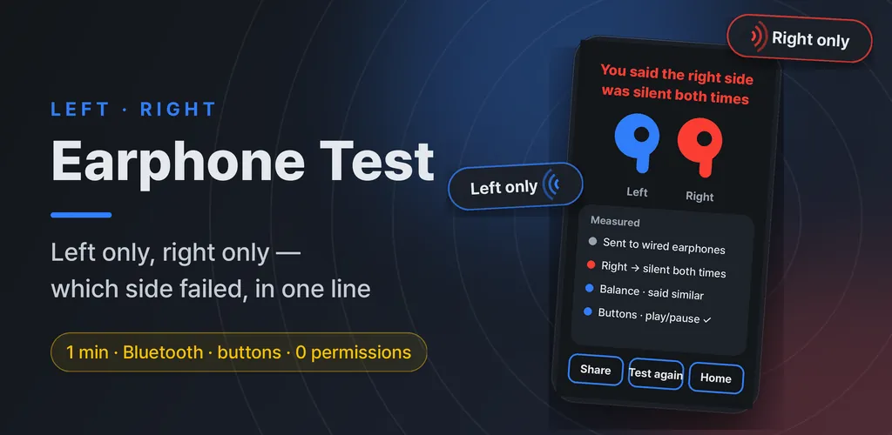
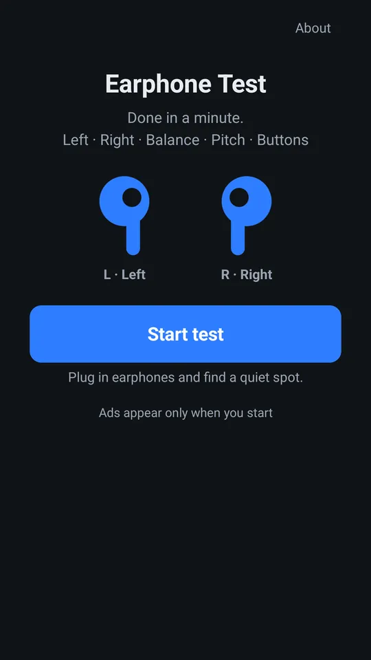
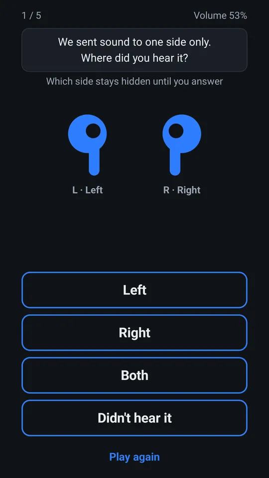
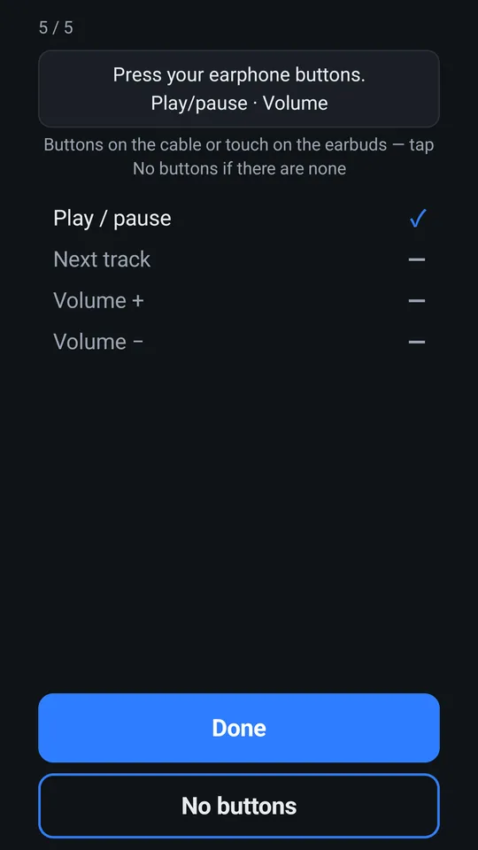
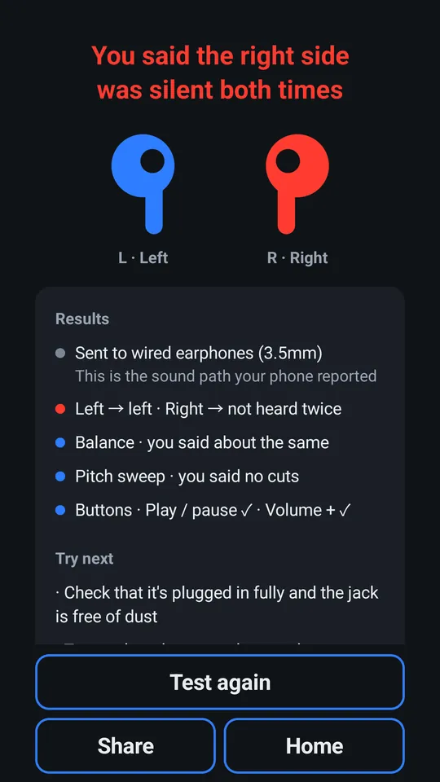
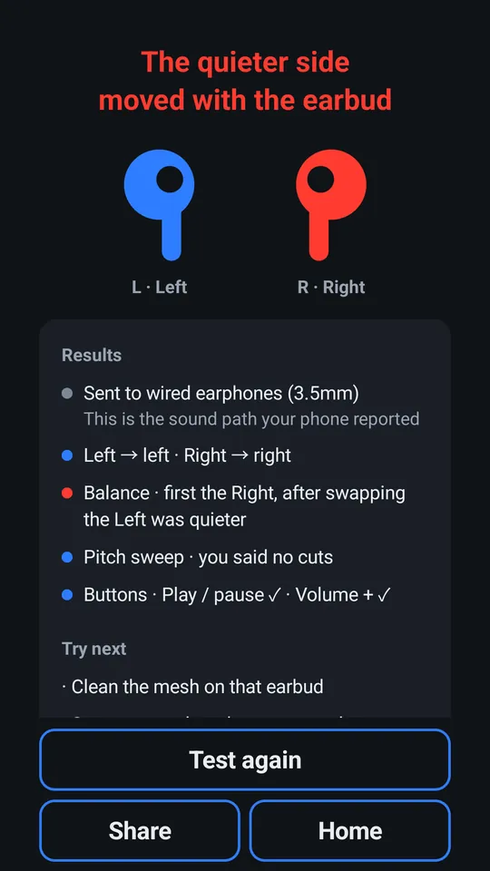

Earphone Test: Left Right
Headphone left right test: which side failed, earbuds or phone setting, buttons






About this app
Is one earbud quieter than the other? Do left and right feel swapped? Your Bluetooth earbuds say connected, but the sound comes out of the phone?
Earphone Test plays left only, right only, both sides at the same level, a low-to-high sweep and a button check in about a minute. Answer what you heard, and you get the result in one sentence.
Which side failed, in one sentence
- One side at a time, the app asks "Where did you hear it?" It tells you which side it sent only after you answer.
- If an answer looks odd, you hear the same sound once more. Only a result you gave twice goes on the card.
- With wired earphones, you swap them and listen again. If the quiet side follows the earbud, it points to the earphones. If it stays on the same side, it points to the phone side.
Where your sound is going right now
- The app reads back the actual playback route and shows whether the sound went to wired, USB or Bluetooth.
- If your Bluetooth earbuds are connected but the sound goes to the phone speaker, you are told right away.
- On phones where mono audio or left/right balance can be read, the app warns you when it is on and opens the settings screen.
Earphone button test
- Press play/pause, next, volume up and volume down on your earphones. Each button that comes through gets a check mark.
Safe to start with earbuds in
- During the test, the volume is set to 50% and restored when you finish. Ad sound also plays at 50%.
- No loud sounds.
Zero permissions
- No microphone, Bluetooth, storage or any other device permission is requested. Results are not stored on the device.
- Share the result card as an image. It works well as a self-run result when you sell used earphones.
Great for
- One side of your earphones sounds quiet or silent
- Checking new or used earphones right away
- A one-minute headphone test or stereo test for Bluetooth earbuds
Good to know
- This app summarizes which side you heard, based on your own answers. It does not test your ears and it is not a medical device.
- The result does not declare the condition of your earphones. It tells you what to check next.
- The app is free and shows ads (a full-screen ad before a test starts and a banner at the bottom of the home screen).
Android · free with ads · Developer: RealTunaLove · Store listing in 17 languages